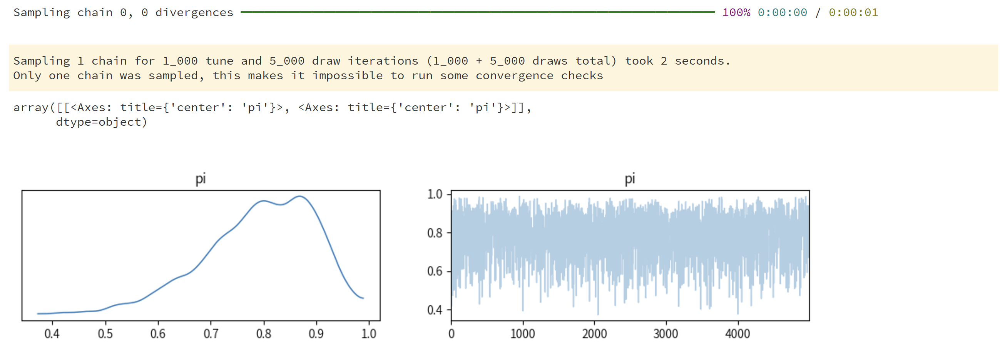
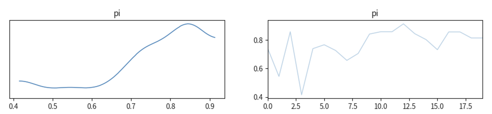
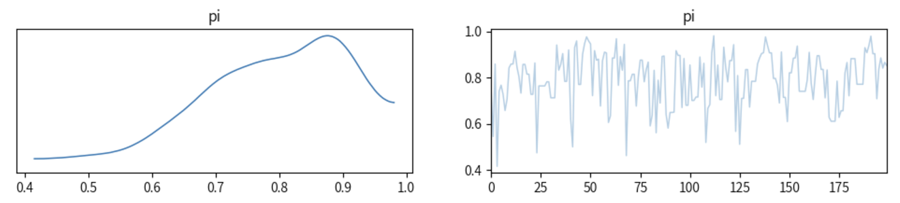
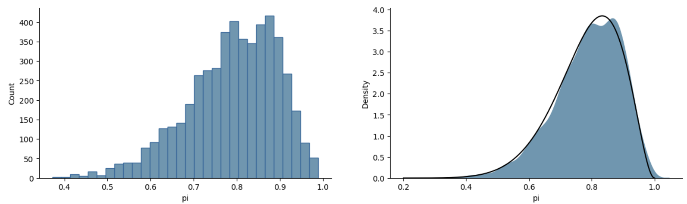

Lecture7 : Posterior Inference & Estimation#
为什么选择PyMC？#
在实际操作中，PyMC 封装了许多底层 MCMC 算法，如 Metropolis-Hastings 和 NUTS（No-U-Turn Sampler），使得用户可以将更多精力集中在模型构建和推断结果的分析上。
在贝叶斯中，PyMC 提供了一套丰富的接口，覆盖了贝叶斯建模的各个环节，包括模型定义、设置先验和似然分布、采样、后验预测和诊断。
接下来我们介绍 PyMC 的基本使用流程和核心模块:
模型定义：PyMC 中所有的模型都是在pm.Model()语句中定义的。用户可以在其中指定模型的参数（即先验分布）和观测数据的分布（即似然函数）。
概率分布（Distributions）：PyMC 支持多种常见的概率分布，例如 Normal, Beta, Bernoulli, Binomial, Poisson 等，用于定义先验和似然分布。用户还可以通过pm.< Distribution >的形式来定义参数的先验和似然（例如混合模型分布）。
采样（Sampling）：PyMC使用多种采样算法进行后验采样,如Metropolis-Hastings和NUTS（No-U-Turn Sampler）。
后验预测：PyMC 支持从后验分布生成新的观测值，根据pm.sample_posterior_predictive()它可以帮助我们验证模型的合理性，即模型生成的数据是否与真实数据一致。
诊断和可视化：PyMC 提供了与 Arviz 包的集成，用户可以使用 az.plot_trace()等函数可视化参数的后验分布和采样轨迹，并使用az.summary()查看后验统计量。这些工具有助于诊断采样的收敛性和质量。
A Beta-Binomial example in pymc#
假设我们进行了一项随机点运动任务的实验，每个试验中参与者判断正确的概率用\(π\)表示。
模型假设
首先，根据我们的研究问题，确定正确率服从什么样的分布
我们假设参与者判断正确的概率\(\pi\)是从Beta分布中抽样的：
其次，确定我们关注的参数是什么
在每次试验中，参与者的成功次数\(Y\)服从一个Binomial分布：
其中，n是试验的总次数，Y是成功次数
模型设定
在这个例子中，我们可以使用Beta-Binomial模型来表示：
接下来，我们将使用 Pymc 来表达和设定 Beta-Binomial 模型:
import pymc as pm
import arviz as az
# 定义观测值Y=9
Y = 9
# 创建一个 PyMC 模型名为 bb_model,此时仅创建了一个空模型
bb_model = pm.Model()
# 在bb_model这个空模型基础上，使用with语句将模型与变量联系起来
with bb_model:
# 定义一个符合beta先验分布的变量pi
pi = pm.Beta('pi', alpha=2, beta=2)
# 定义符合binomial分布的变量likelihood，其中总次数为10，成功概率为pi，观测值为Y
likelihood = pm.Binomial('likelihood', n=10, p=pi, observed=Y)
代码解释
在pymc中，一个模型的定义通常包含了先验和似然两部分(其复杂性视模型复杂程度而定)：
1、设立容器
在pymc中，你需要创建一个pm.Model()来容纳你模型中的变量
接下来你需要定义模型里的各种参数，即with bb_model:，表明接下来你对模型中各参数的设定，都会被添加到该模型中
或者也可以直接一步写成：with pm.Model() as bb_model:
2、定义先验
在这个例子中，我们需要对\(π\)进行定义
3、定义似然
我们通过observed = Y，将收集到的数据传入似然函数中
模型可视化
可以通过PyMC3自带的可视化工具将模型关系可视化
pm.model_to_graphviz(bb_model)
使用mcmc进行采样
在以下例子中，将 MCMC 采样方法得到的参数样本赋值为 trace。
使用 sample 方法进行 MCMC 采样模拟过程。
设置参数 draws 来控制 MCMC 采样的次数。
chains 表示同时运行几条MCMC链。
这里其实还有很多参数可以设定，但绝大多数情况下，我们只需要对这几个参数值进行设定即可，其他参数值都是设定好的默认值。
我们可以使用 arviz 的方法 plot_trace 来可视化该结果
左图为参数分布图
右图为 trace 图，代表随着采样的进行(即x轴1-5000次采样)，每个参数值的大小(即y轴为每个采样参数的大小)。
#采样过程仍在该容器中进行
with bb_model:
trace = pm.sample(draws=5000, # 使用mcmc方法进行采样，draws为采样次数
chains=1, # 设置MCMC的链数为1条，但默认链数并不是1条
random_seed=84735) # 设置随机状态，以获得与notebook相同的结果
# 可视化采样结果
az.plot_trace(trace)

采样的时间进程
下图展示了第一条Makov链的前20个采样结果和前200个结果：
# 选取第一条Makov链的前20个采样结果和前200个结果
# 从trace中提取pi的值，使用sel(chain=0)表示为选择第一条markov链。使用.values[:20]表示选取前20个采样结果
samples_20 = trace.posterior["pi"].sel(chain=0).values[:20]
samples_200 = trace.posterior["pi"].sel(chain=0).values[:200]
# 绘图
# az.plot_trace表示绘制前20个采样结果的轨迹图，其中pi为变量名，samples_20为采样结果
az.plot_trace({"pi": samples_20})
az.plot_trace({"pi": samples_200})
前20个采样结果：

前200个采样结果：

同样，我们也可以显示出5000个sample，这5000个sample就组成了trace或者chain
import pandas as pd
post_pi = pd.DataFrame({"pi": trace.posterior["pi"].values.reshape(-1)})
post_pi
采样结果可视化
将采样结果(5000次采样)对比真实的后验分布(黑线)Beta(11, 3)
可以看到这个采样结果很好地近似了后验分布
import matplotlib.pyplot as plt
import seaborn as sns
import numpy as np
import scipy.stats as st
fig, (axs1, axs2) = plt.subplots(1, 2, figsize=(15, 4))
#绘制采样结果直方图
sns.histplot(data=post_pi,
x="pi",
bins=30,
ax=axs1,
edgecolor='#20699d',
color="#6497b1",
alpha = 1)
#绘制采样结果密度分布图
sns.kdeplot(data=post_pi,
x="pi",
color='#6497b1',
fill=True,
alpha = 1,
ax=axs2)
#绘制真实后验分布图
x = np.linspace(0.2, 1, 10000)
# 真实的后验分布 beta（alpha + y, beta + n - y）
y = st.beta.pdf(x, 11, 3)
axs2.plot(x, y, color='black')
sns.despine()

可以看出，通过mcmc得到的密度分布图和真实的后验分布图基本上是非常相似的。
需要注意：虽然通过设置相同的随机种子，但不能完全保证最后的结果是完全一致的，但跑出来的趋势基本是一致的，并且误差较小。